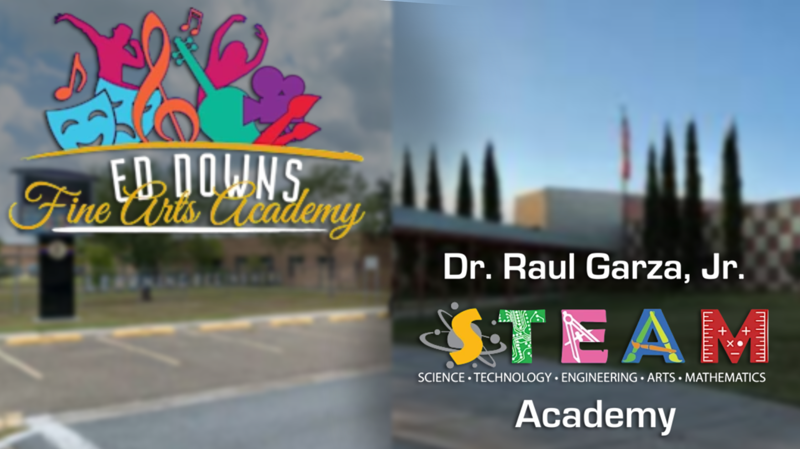
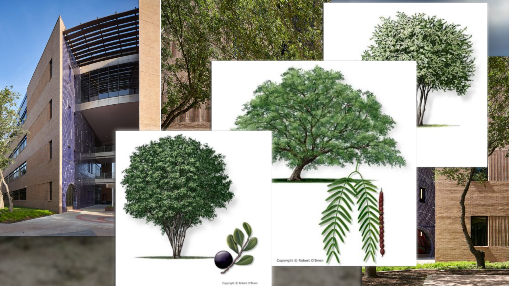
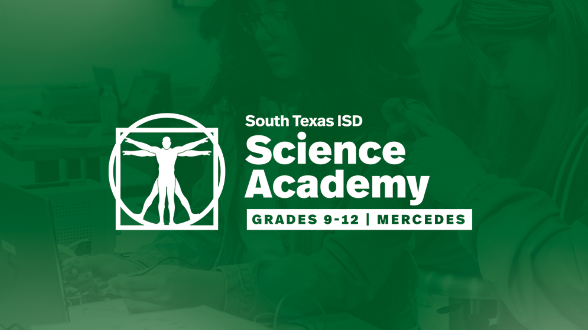

1. Origin

I grew up in San Benito, where I lived for about 10 to 11 years. With this, I was enrolled in local schools. The first one was Ed Downs Elementary, and later I attended STEAM Academy from 3rd through 5th grade. Without both of these schools, I would have never had a kickstart on my development in reading. This was greatly influenced by their libraries and encouragement to explore literature and general academics at both.
2. My First Device
When I was about 3 years old, I was given my first device. This was the iPad 3rd Generation. With this device, I dove into advanced ideas that a regular child without one wouldn’t. Growing up online influenced me to become a better reader, researcher, and writer because of how vast the digital landscape is. From my hobby of digital technology, searching up questions that come to mind or even typing out assignments, my skills gradually sharpened.
3. Research Influence

With internships that I’ve taken, the most important one was UTRGV’s Summer Science Program. I was accepted because of what I’ve done and my interests as a student during my time in high school, allowing me to experience what it feels to physically be in a lab. This paid internship lasted for less than a month, but I did learn a lot from it. To start off, I was placed in for Dr. Christofferson and his lab which focused on the native biome called the Tamaulipan Thornscrub, located in the Rio Grande Valley. Since I had some knowledge on native plant species in Texas due to high school organizations like Envirothon, some of the ideas were more common than I thought. Although, I did learn and research deeper details about how specific species like Honey Mesquite and Texas Persimmon grew in contrast from one another. This internship gave me more experience in terms of research and reading as a whole due to the final project, which was a presentation spoken by me. To add on, I also had to study and learn a new programming language which was called “R”. This language allowed for the visualization of data, mainly being used for differentiation of growth rates between the native plants.
4. High school Life

Now in 2026, I am currently a Junior enrolled in a high school called Science Academy, also named “Sci-Tech”. Multiple teachers while in school helped me become a better reader and writer. This mostly includes my English teachers though. My freshmen teacher, Mr. Wilson, contributed to me taking work more seriously. Usually helping me fix my essays, pointing out errors in my sentence structure. I’ve improved, but I do know that I still may have fragmented sentences. My sophomore teacher, Ms. Ybarra, focused more on my TSI issues. Honing my understanding on what they want and how to make it happen, structuring an essay to the best of my abilities. This allowed me to get an 8/8. Other than English, the organization called the “Ecology Club” influenced my interest in researching and learning important ideas like recycling and environmental science as a genre. These two factors, my English teachers, and the Ecology Club, helped my general writing, researching, and reading.
Conclusion: The Modern Literacy Toolkit
My overall definition of what it means to be a "literate person" has evolved quite dramatically over the years. I am no longer just someone who reads standard textbooks or types traditional academic essays; I am someone who builds dynamic web interfaces, analyzes complex ecological data sets using R, scripts responsive virtual mechanics, and leverages clear communication to bridge the persistent gap between technical science and the everyday world.
Contact & Connect
If you'd like to talk about code, scientific research, or our shared literacy journeys, feel free to reach out anytime!
Email: name@example.com